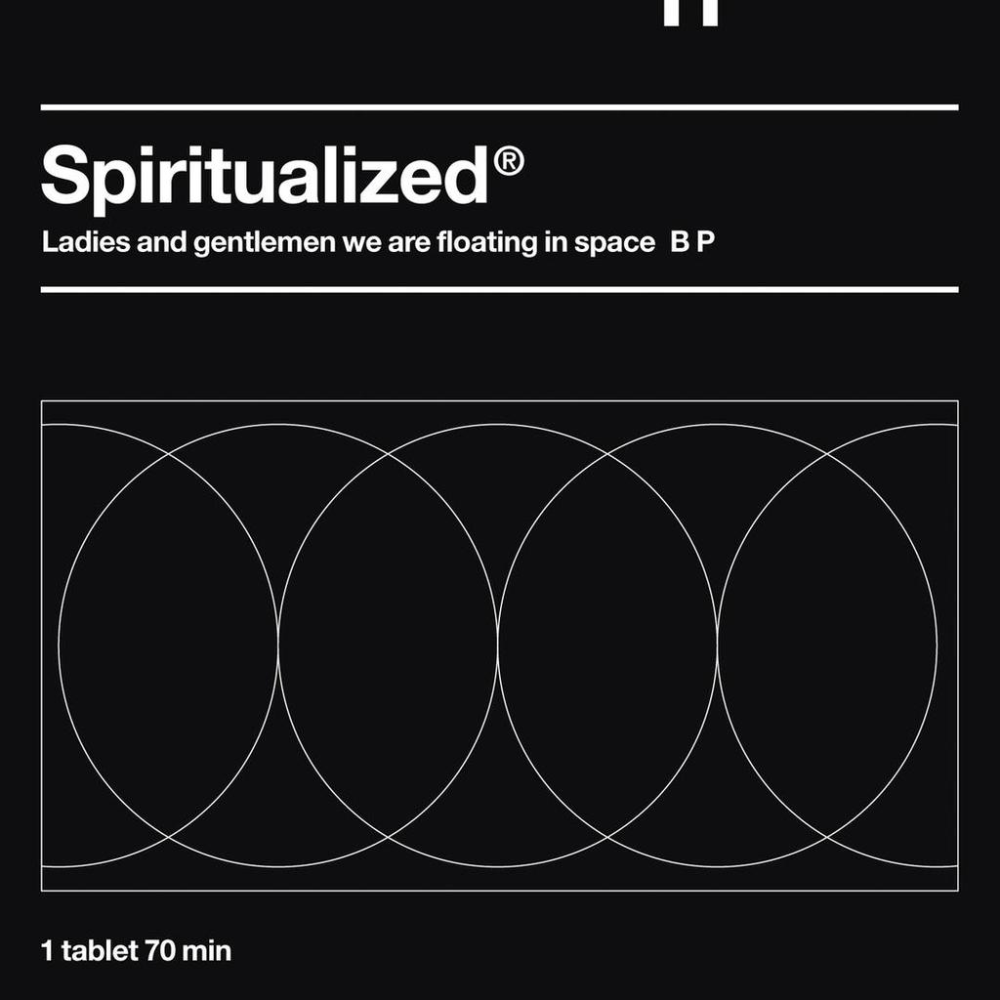

Ladies and Gentlemen We Are Floating in Space is the third studio album by English space rock band Spiritualized, released on 16 June 1997. The album features guest appearances from the Balanescu Quartet, The London Community Gospel Choir and Dr. John.
- "Ladies and Gentlemen We Are Floating in Space (I Can't Help Falling in Love)"
- "Come Together"
- "I Think I'm in Love"
- "All of My Thoughts"
- "Stay with Me"
- "Electricity"
- "Home of the Brave"
- "The Individual"
- "Broken Heart"
- "No God Only Religion"
- "Cool Waves"
- "Cop Shoot Cop…"